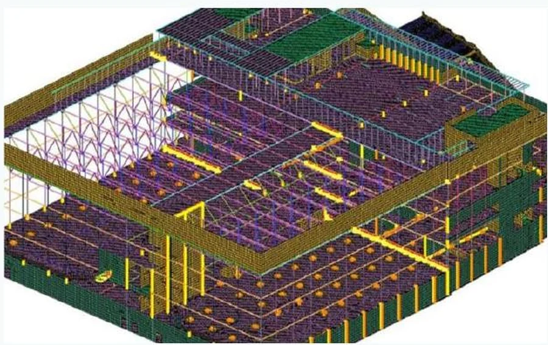
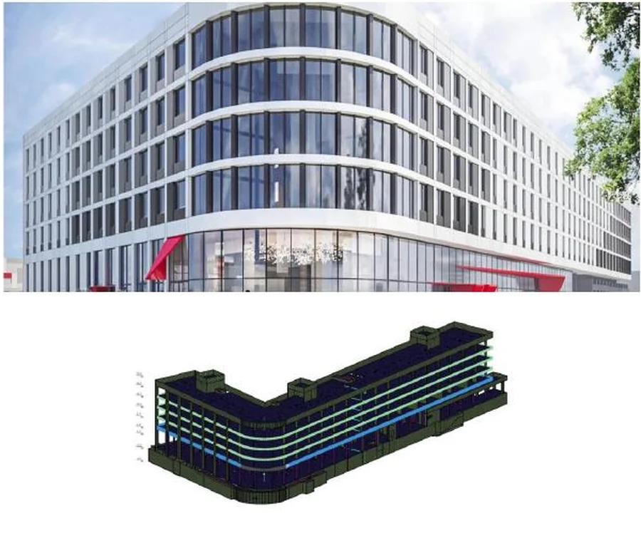
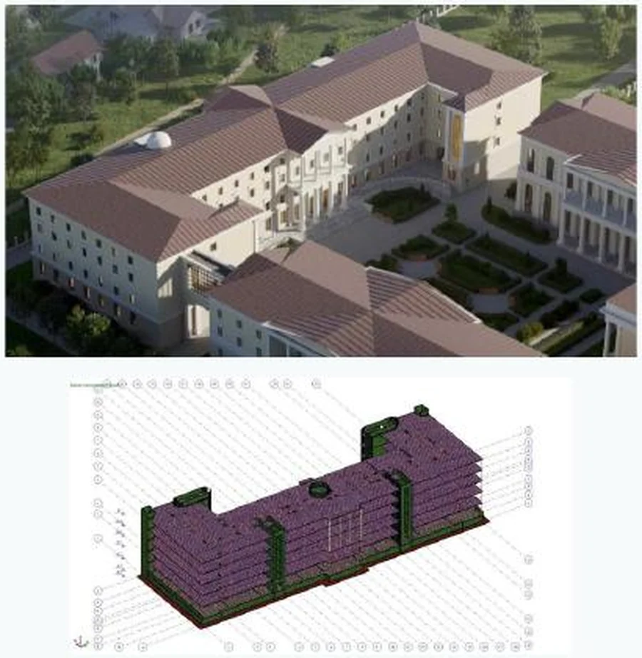
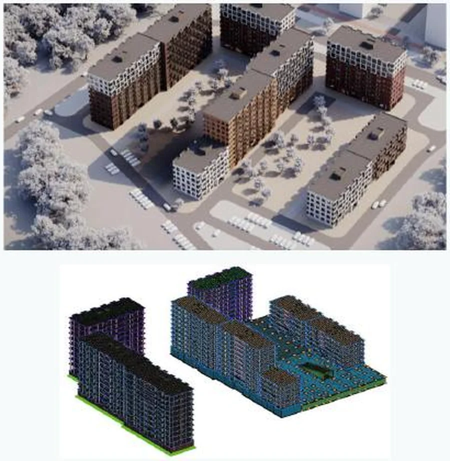
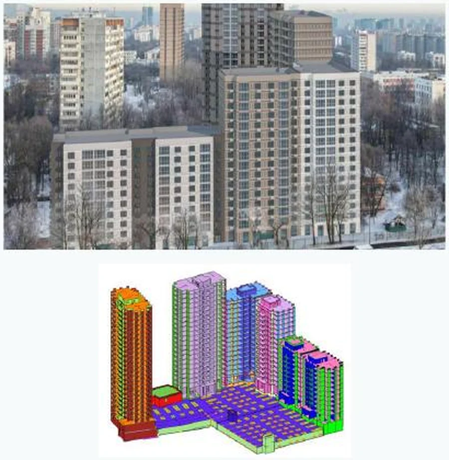
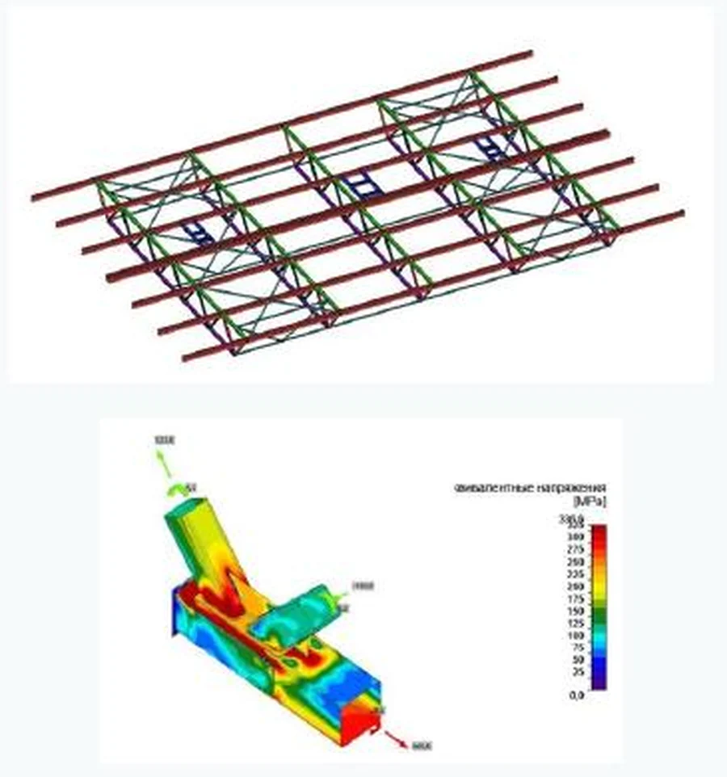
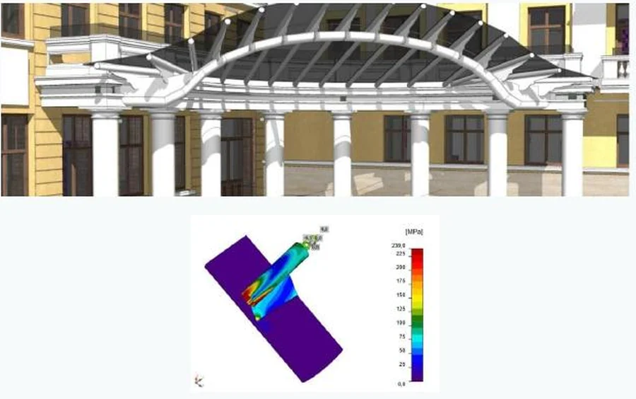
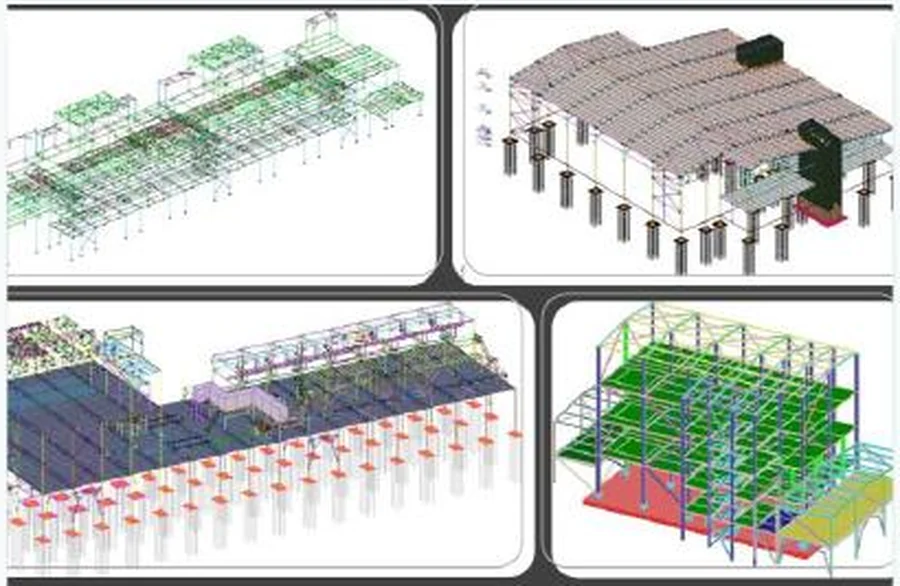

PIK Group
Design errors, construction deviations, independent checks, R&D and high-consequence structural decisions across a major developer’s portfolio.
Structural design · verification · site engineering
We design and verify load-bearing structures, investigate defects and deviations, develop strengthening solutions and support construction teams from concept through completion.

Representative calculation model from the STC Mitra project portfolio
Structural safety
Controlled programme
Defensible budget
Clear technical position
Built inside a major developer
The team developed as the in-house calculation centre and technical directorate of PIK Group. We worked where design intent, construction reality, programme and cost meet.
Design errors, construction deviations, independent checks, R&D and high-consequence structural decisions across a major developer’s portfolio.
The same engineering team, methodology and practical knowledge became an independent structural engineering company.
Structural design, verification, surveys, strengthening and site support for design firms, developers, technical clients and contractors.
We are expanding our delivery base into Uzbekistan and building partnerships with local developers, design practices and international project teams.
Track record
Our independent portfolio covers individual checks, full design packages and long-running construction support.
Portfolio data shown in the consolidated company presentation, January 2025–June 2026.
What we deliver
We can join as a calculation group, structural designer, independent checker or construction-stage engineering partner.
Concept, design and construction documentation for reinforced concrete and steel structures, including models, drawings, details and schedules.
Checks of strength, stability, serviceability, robustness and special load cases for proposed and as-built structures.
Condition surveys, measurements, testing, damage assessment and calculation-based evaluation of structural fitness.
Independent review of assumptions, structural schemes, loads, details, risks and opportunities for rationalisation.
From options appraisal and nonlinear analysis to buildable drawings and technical support during implementation.
Assessment of as-built departures, admissibility of further work, remedial options and defensible technical decisions.
Foundations, piles, settlement, tilt, excavations and soil–foundation–superstructure interaction where required.
Testing, model verification, bespoke methods and non-standard tasks where a conventional calculation is not enough.
Codes and calculation depth
We agree the governing code, safety format, load combinations, material models and deliverable structure at the start of each assignment.
Selected project experience
Representative images and calculation models from our consolidated company presentation.

Nonlinear verification of the frame and steel beams; strengthening of slabs, raft foundation and vertical elements; support through implementation.

Design and construction documentation with structural supervision.

Structural scheme and calculation models for a multi-building residential project.

High-rise residential buildings with a shared parking structure.

Verification of trusses, local numerical modelling of connections and strengthening design.

Entrance structure verification and detailed modelling of steel connection behaviour.

Global and local models for industrial buildings, steel frames and foundations.
When construction does not match the drawings
The decision must satisfy the code, reflect the actual structure and remain practical for the construction sequence, access and budget.
Photos, survey data, as-built geometry, material strength and construction records.
Structural scheme, loads, construction stage, observed defects and credible scenarios.
Accept as built, repair locally, compensate elsewhere or develop strengthening.
Technical decision, drawings, site queries, supervision and close-out documentation.
How we integrate
Independent technical position on safety, programme, scope and cost.
A calculation and structural design team for peak loads, specialist checks or complete packages.
Design audit, due diligence, surveys and verification of proposed remedial measures.
Rapid assessment of deviations and buildable solutions that keep the project moving safely.
Start with the engineering question
We will review the available information, identify what is missing and propose the right format: verification, design, survey or ongoing engineering support.
Abduzarr Zhalnin · Director, STC Mitra · international delivery and Uzbekistan expansion